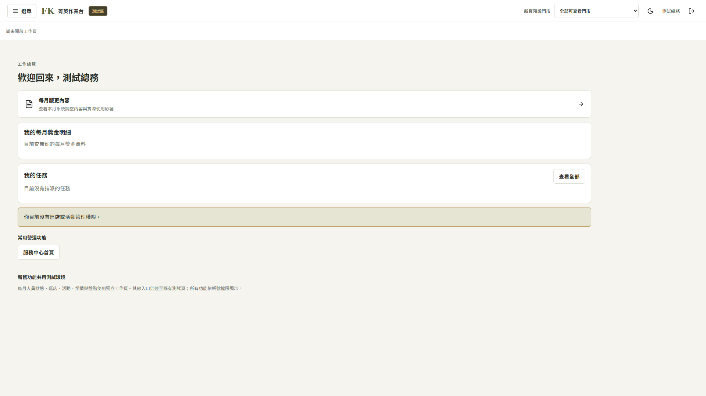
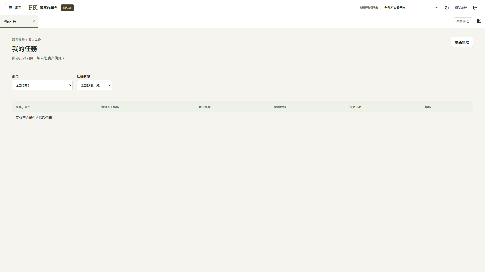
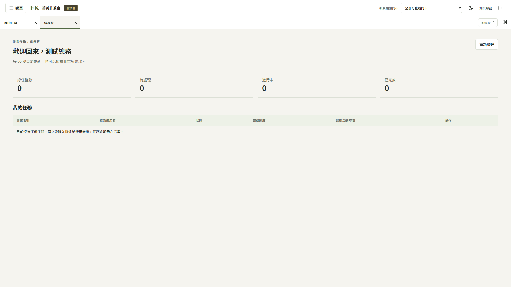
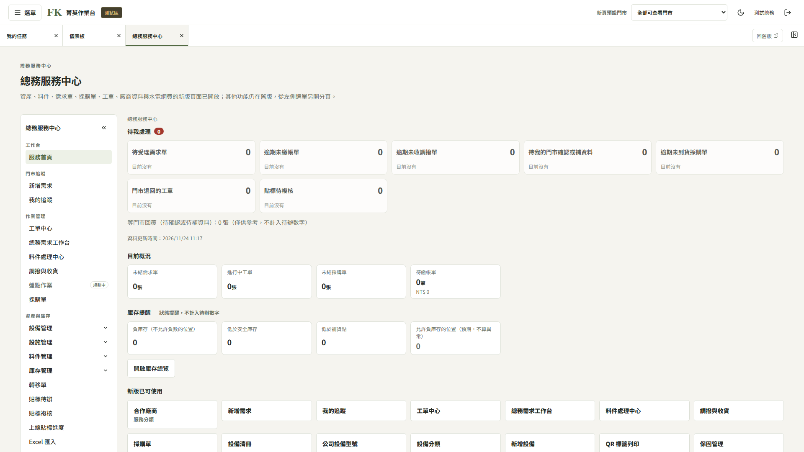
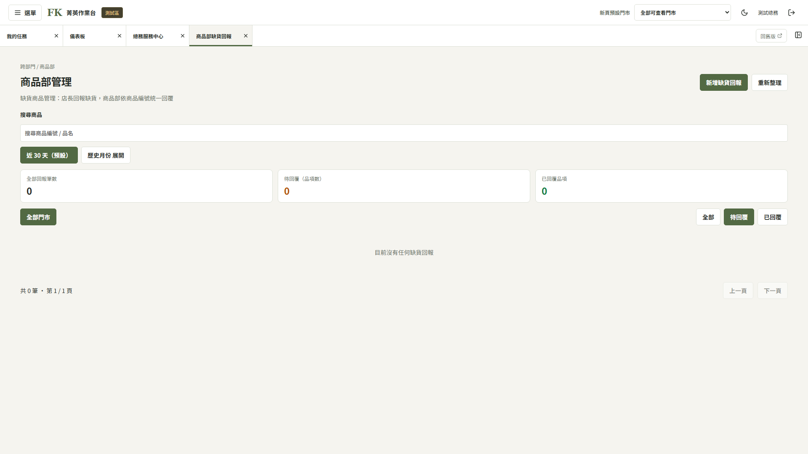
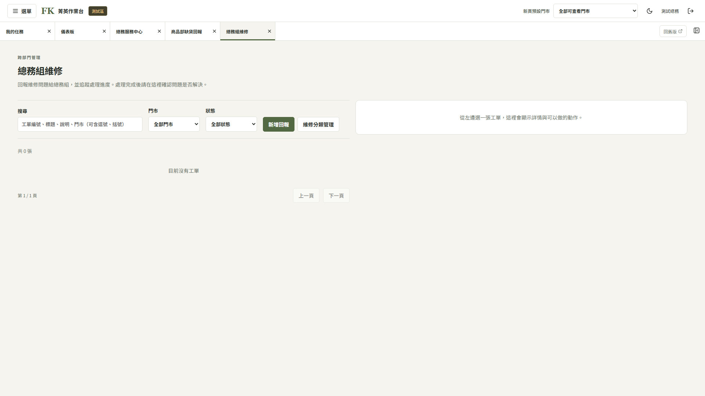
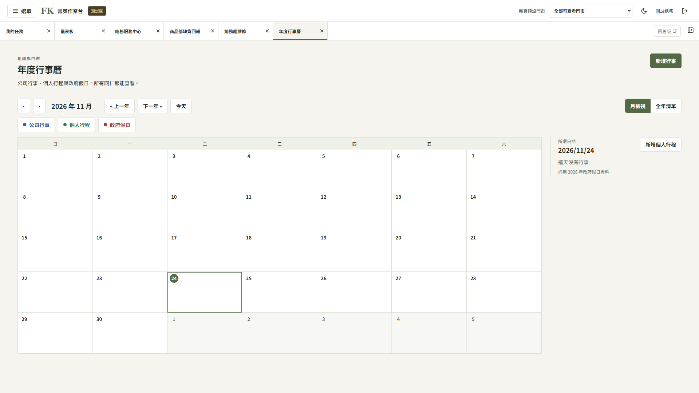
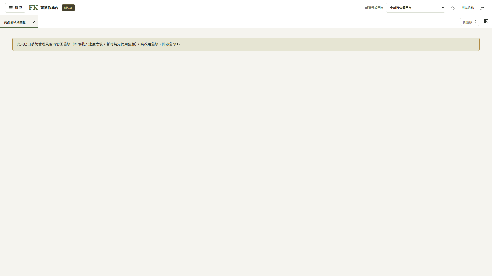

總務同仁：新版工作台上線說明
為什麼換新版？新版把常用功能集中在同一個畫面，可以同時開多個分頁，查資料和處理工單都更快。
上線日：另行通知
新版怎麼進去
- 用平常的方式登入，登入後先看到「工作總覽」。
- 點左上角「選單」，總務服務中心與跨部門管理的項目都在裡面。
- 點選單裡的項目，會在上方開一個新分頁，可以同時開好幾頁來回切換。

登入後看到的工作總覽。總務服務中心與跨部門管理，都在左上角「選單」裡。
你最常用的頁面
我的任務

從左上角「選單」裡的「派發任務」打開。你交辦與被交辦的事項都在這裡，一目了然。
跟舊版不同：可以用上方分頁同時開好幾頁，來回切換不用重開；右上角多了「回舊版」。
儀表板

一進來就能看到目前的整體數字與重點。你不用一直按重新整理，頁面自己會更新。
跟舊版不同：每 60 秒自動更新一次，想立刻看到最新數字，也可以手動按重新整理。
總務服務中心首頁

這是你最常用的地方。最上面是「待我處理」的數字，下面列出新版已經能用的功能，例如工單中心、設備清冊、庫存位置、調撥與收貨等，點一下就能進去。
跟舊版不同：「待總務複核」的需求單不再算進待辦數字與選單徽章。選單上的徽章可以單獨點，點了只會看到待辦的項目。水電費選單拆成「帳單列表」與「費用報表」兩項。
商品部（缺貨回報）

在這裡回報門市缺貨的商品，現在改在新版分頁裡開啟，不會跳到別的畫面。
跟舊版不同：同一門市 7 天內重複回報同一商品，會先跳出提醒；確定要再報，按「仍要送出」才會新增。日期一律以台北時間計算；刪除資料時，改用頁面內的確認視窗。
總務組維修

左邊挑一張工單，右邊馬上看到詳細內容，處理起來不用來回翻頁。
跟舊版不同：總務不能替門市按「門市確認」，要由回報人或該門市店長來按。視窗變窄或用手機看時，會自動改成單欄卡片，一次看一張。
年度行事曆

在選單的「組織與門市」裡打開。可以看每個月的行程，也可以切到全年清單一次看完。所有同仁都能查看。
跟舊版不同：有「月檢視」與「全年清單」兩種看法，方便你提早安排工作。
遇到問題怎麼辦
- 想用舊版：按右上角的「回舊版」，會另外開一個舊版頁面。你在新版還沒存的內容不會不見，可以放心切換。
- 看到「此頁已由系統管理員暫時切回舊版」的通知：點通知裡的連結，就會在新分頁打開舊版頁面，照舊版繼續做就可以。
- 還是不行：請聯絡總部系統管理員。
被切回舊版時，畫面會長這樣

通知畫面：已經開著的新版分頁會出現說明與「開啟舊版」連結，內容會先收起來。如果你有還沒存檔的內容，系統會先幫你保留，讓你存好之後再改用舊版。
常見問題
Q1. 舊版還能用嗎？
可以。右上角「回舊版」隨時能用，舊版會另外開一個頁面。
Q2. 我切到舊版，新版寫到一半的內容會不見嗎？
不會。還沒存的內容會保留，等你存好之後再切換就行。
Q3. 選單上的紅色數字是什麼？
是需要你處理的待辦件數。直接點它，就只會看到待辦的項目。「待總務複核」的需求單不再計入。
Q4. 為什麼我不能替門市按「門市確認」？
這個按鈕要由回報人或該門市店長來按，總務無法代按。請通知門市同仁確認。
Q5. 用手機看版面會跑掉嗎？
不會。視窗變窄或用手機時，列表會自動改成單欄卡片，方便一張一張看。
有任何疑問，請聯絡總部系統管理員。